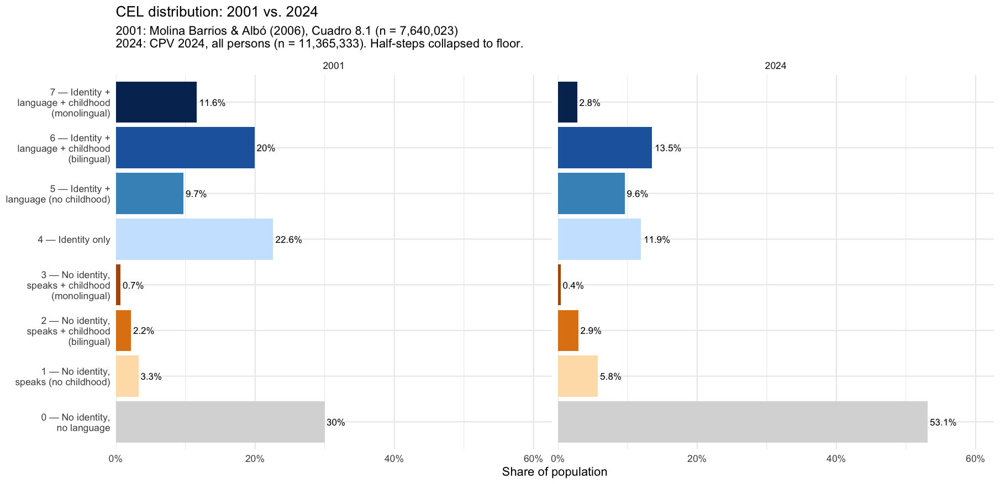
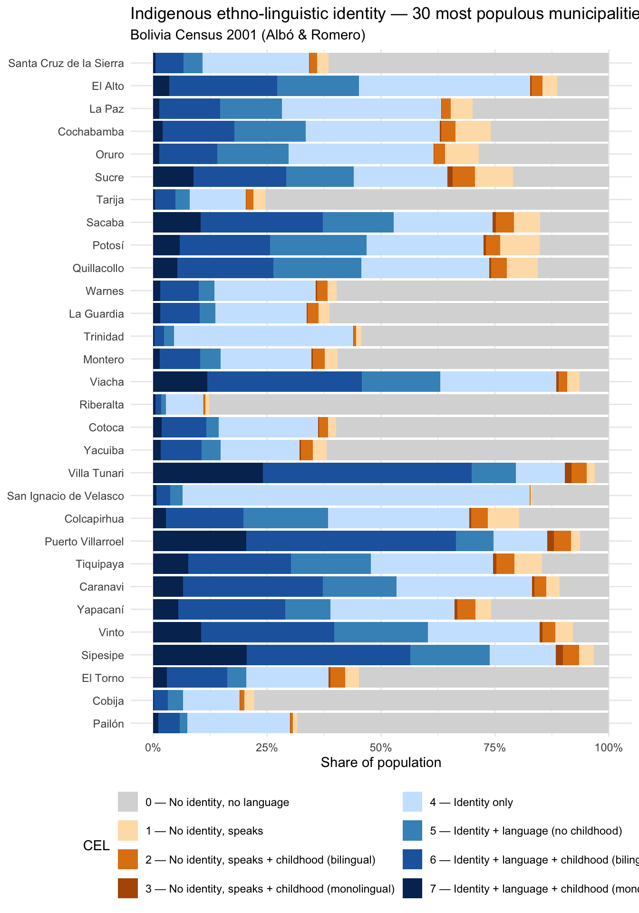
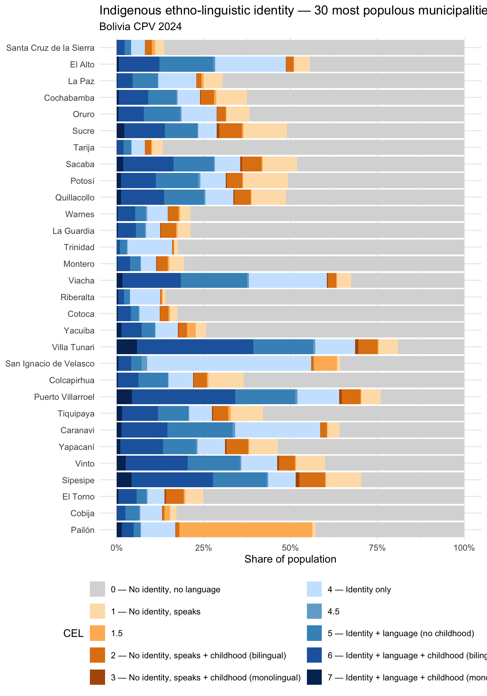
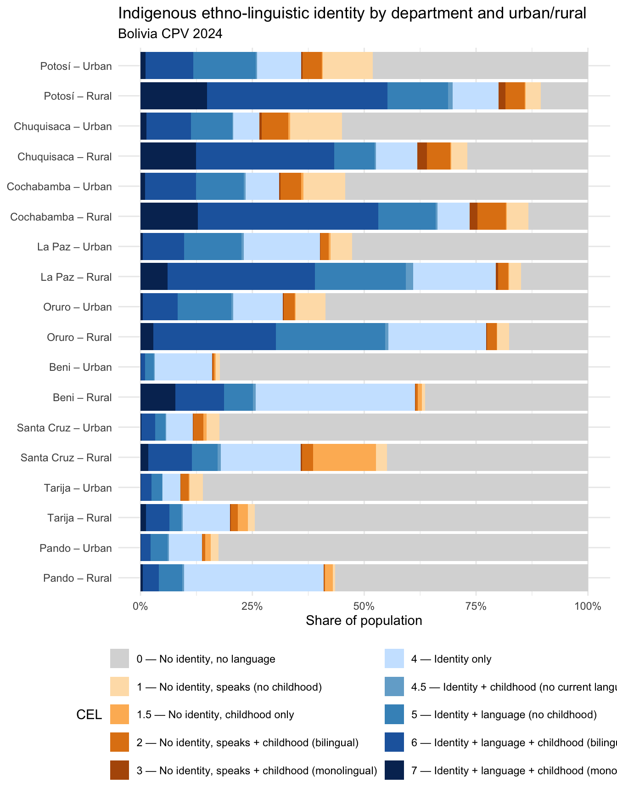
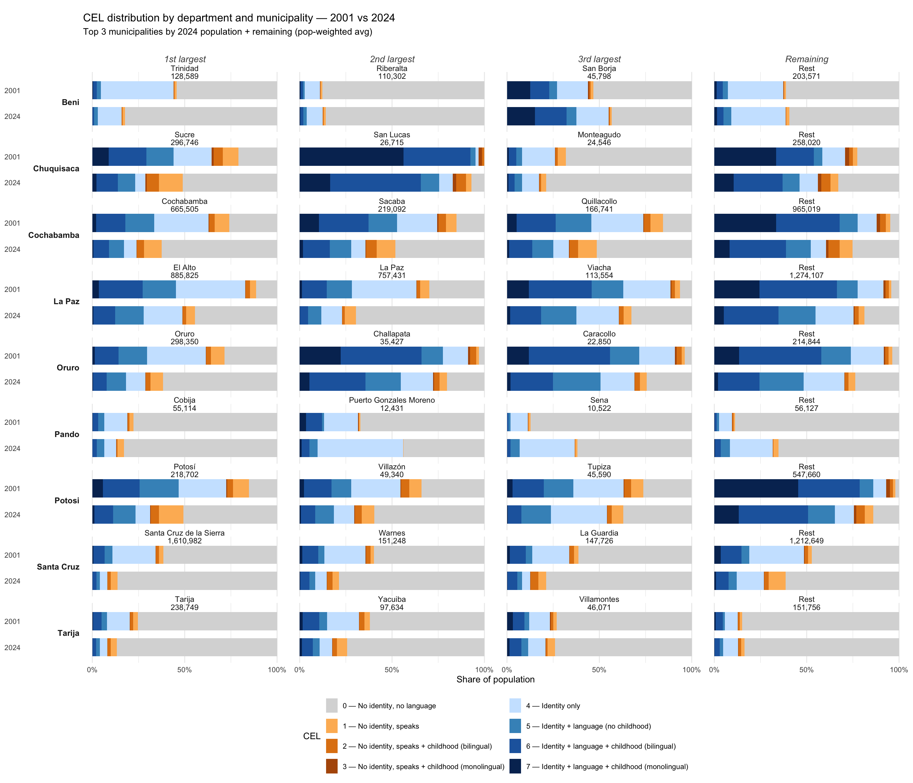

Shifting Indigenous Identity in Boilvia
Draft thoughts on changing demographics
Gathering data on Indigenous identity in Bolivia is one part of the background work for my database project: few press accounts or other sources pinpoint the Indigenous or non-Indigenous idenitity of individuals killed, but there’s a lot of information at the municipal level. One data crunching task that has been on my wish list was compiling place-based estimates for the share of Indigenous peoples and using them to make sense of how political violence differentially affects Indigenous people.
But to do this I needed a numerical baseline that can also handle multiple definitions. In the back of my mind, I’ve long been aware of Xavier Albó and Carlos Romero’s work on quantifying Indigenous identity in preparation for the new Constitution, Autonomías indígenas en la realidad boliviana y su nueva Constitución. Albó is probably the foremost expert on indegeneity in Bolivia and Romero was formerly head of CEJIS, the Indigenous rights legal support organization based in Santa Cruz. The book made the case that not only were there several dozen extant Indigenous territories deserving autonomy, but that most Bolivian municipalities were readymade spaces for Indigenous people to exercise self rule. They did this by showing that Indigenous identity was nearly universal or at least the norm in hundreds of municipalities.
This work was built atop an earlier work by Ramiro Molina and Albó that characterized individual Indigenous identity using linguistic as well as ethnic criteria. Indigenous identity in Bolivia can be be complicated, something reflected in the five-letter acronym used for the Census for it: NPIOC, Naciones y Pueblos Indígenas Originarios, Campesinos. The current Census takes in 55 Indigenous ethnic categories (including “Quechua – Aymara” and “Afrobloliviano”), counts the one-in-twenty-eight Bolivians who check campesino, originario, or indígena, and asks multiple questions about Indigenous language use. Molina and Albó consolidated these questions into an eight-point scale they called the Condición Etno-Linguistica (CEL; Ethnolinguistic Condition). Then Albó and Romero tabulated the share of each municipality that reached above levels 2, 4, and 5 on that scale: in essence, Indigenous language speakers, claimers of Indigenous identity, and those who both speak and identify as Indigenous.
This approach gives a few different answers to how much of Bolivia is Indigenous, but the answer is both clear and responsive to questions about what exactly each definition means.
What I wanted to do was to reapply these criteria to newer data, something that became possible with the publication of line-by-line census data from Bolivia’s 2024 National Census of Population and Housing, made available last September.
[skipping over methodology]

The big picture: the share of Bolivians without any Indigenous identity or language use has surged dramatically, from three-in-ten to a clear majority of 53%. Monolingual Indigenous people were 11.6% of the population in 2001, now make up fewer than 3%. A solid 64% self-identified as belonging to an Indigenous people in 2001, where as only 37.8% did so in 2024. (Though if we restrict our sample to the self-identification of those 15 and older, the figure is 42%) While still an unusually high share of a contemporary society, the fraction of Indigenous people has undergone a dramatic decline.
// Notably, almost all of this shift occurred between 2001 and 2012: total Indigenous identification had sunk to 40.57% in the 2012 Census. However, I was among those who were very skeptical of this number at the time. The 2012 Census took place in a highly politicized context in which the absence of a “mestizo” option from this census question was highly debated in the press. Many of us read the sharp decline as, in part, a temporary political choice. Survey data also from 2012 showed 72% of Bolivians describing themselves as belonging to an Indigenous people (LAPOP 2012, p.241). This wide divergence between answers to government surveyors and to foreign researchers suggested that much of the decline might be about who is asking the question.
However, there is now a clear signature in the LAPOP survey data as well: In 2023, the share of LAPOP survey respondents indicating belonging to an Indigenous or Afrobolivian people was 54%. I now think it’s fair to see this as an enduring change and not an artifact of respondents’ stance towards the government. //
Even as the non-indigenous population has enlarged everywhere, there is still a major divide between the five highland and valley departments, where Indigenous identity of some kind is in the majority and the lowlands, where it doesn’t exceed 30%.

But, for me, the most important shift is in Bolivian cities. In 2001, every highland city had an unmistakable Indigenous majority. This fact appeared in the first ten minutes of every talk I gave and the first section of many things I wrote.

In 2024, the picture is very different, with El Alto hanging on to a Indigenous plurality/majority, but only smaller places (like its neighbors Viacha and Sipesipe, and the Chapare boomtown of Villa Tunari) holding real Indigenous majorities.

Where the main story I was telling for years was of an emergent urban Indigenous category, we now see dramatic contrasts in urban vs. rural identification.

Here’s a detailed picture of the top three municipalities in each department and their remaining, mostly rural, areas.
